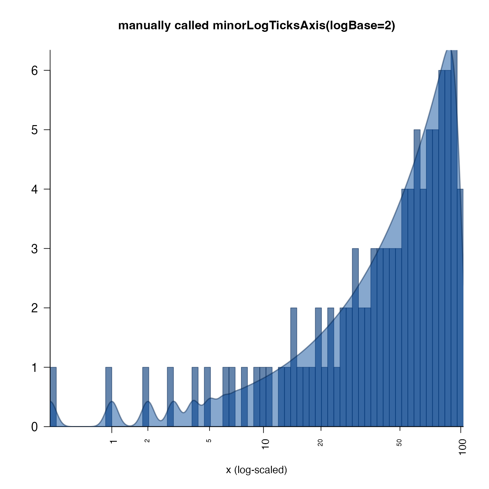
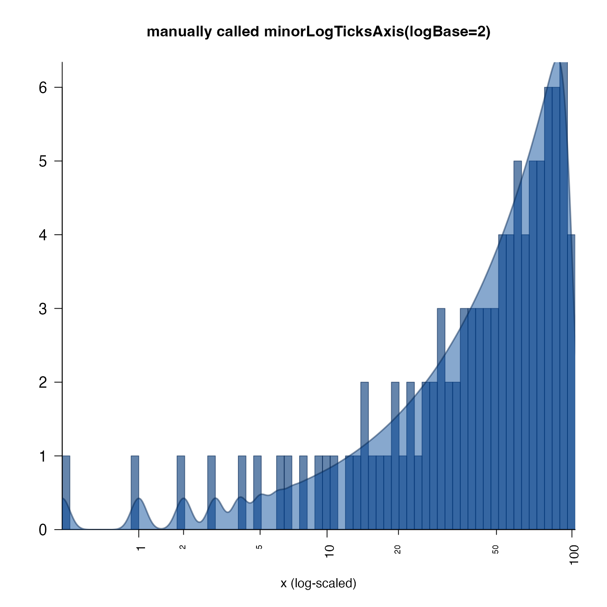

Display major and minor tick marks for log-scale axis,
with optional offset for proper labeling of log2(1+x)
with numeric offset.
Log fold axis
Usage
minorLogTicksAxis(
side = NULL,
lims = NULL,
logBase = 2,
displayBase = 10,
offset = 0,
symmetricZero = (offset > 0),
majorCex = 1,
minorCex = 0.65,
doMajor = TRUE,
doMinor = TRUE,
doLabels = TRUE,
doMinorLabels = TRUE,
asValues = TRUE,
logAxisType = c("normal", "flip", "pvalue"),
padj = NULL,
doFormat = TRUE,
big.mark = ",",
scipen = 10,
minorWhich = c(2, 5),
logStep = 1,
cex = 1,
las = 2,
col = "black",
col.ticks = col,
minorLogTicksData = NULL,
verbose = FALSE,
...
)
logFoldAxis(
side = NULL,
lims = NULL,
logBase = 2,
displayBase = 2,
offset = 0,
symmetricZero = TRUE,
asValues = TRUE,
minorWhich = NULL,
doMinor = TRUE,
doMinorLabels = NULL,
scipen = 1,
...
)
pvalueAxis(
side = 2,
lims = NULL,
displayBase = 10,
logBase = 10,
logAxisType = "pvalue",
asValues = FALSE,
doMinor = FALSE,
doMinorLabels = FALSE,
scipen = 1,
...
)Arguments
- side
integerindicating the axis side, 1=bottom, 2=left, 3=top, 4=right.- lims
NULL or
numericrange for which the axis tick marks will be determined. If NULL then the correspondinggraphics::par("usr")will be used.- logBase
numericvalue indicating the log base units, which will be used similar to howbaseis used inlog(x, base).- displayBase
numericvalue indicating the log base units to use when determining the numeric label position. For example, data may be log2 scaled, and yet it is visually intuitive to show log transformed axis units in base 10 units. See examples.- offset
numericoffset used in transforming the numeric data displayed on this axis. For example, a common technique is to transform data usinglog2(1+x)which adds1to values prior to the log2 transformation. In this case,offset=1, which ensures the axis labels exactly match the initial numeric value prior to the log2 transform.- symmetricZero
logicalindicating whether numeric values are symmetric around zero. For example, log fold changes should usesymmetricZero=TRUEwhich ensures a log2 value of-2is labeled-4to indicate a negative four fold change. IfsymmetricZero=FALSEa log2 value of-2would be labeled0.0625.- majorCex, minorCex
numericbase text size factors, relative to cex=1 for default text size. These factors are applied in addition to existinggraphics::par("cex")values, preserving any global text size defined there.- doMajor, doMinor, doLabels, doMinorLabels
logical, default TRUE, whether to display each type of tick and label.doMajordisplay major ticks, atdisplayBasepositionsdoMinordisplay minor ticks at intermediate positionsdoLabelsdisplay any labelsdoMinorLabelsdisplay minor labels
- asValues
logical, default TRUE, whether to print the exponentiated value, otherwise FALSE will print the log value.- logAxisType
characterstring with the type of axis values:"normal": axis values as-is."flip": inverted axis values, for example where negative values should be displayed as negative log-transformed values."pvalue": for values transformed as-log10(pvalue)
- padj
numericvector length 2, which is used to position axis labels for the minor and major labels, respectively. For example,padj=c(0,1)will position minor labels just to the left of the tick marks, and major labels just to the right of tick marks. This example is helpful when minor labels bunch up on the right side of each section.- doFormat
logicalindicating whether to applybase::format()to format numeric labels.- big.mark, scipen
arguments passed to
base::format()whendoFormat=TRUE.- minorWhich
integervector indicating which of the minor tick marks should be labeled. Labels are generally numbered from2todisplayBase-1. So by default, log 10 units would add minor tick marks and labels to thec(2,5)position. For log2 units only, the second label is defined at 1.5, which shows minor labels atc(3, 6, 12), which are1.5 * c(2, 4, 8).- logStep
integerthe number of log units per "step", typically1.- cex, col, col.ticks, las
parameters used for axis label size, axis label colors, axis tick mark colors, and label text orientation, respectively.
- minorLogTicksData
listobject created by runningjamba::minorLogTicks(), which allows inspecting and modifying the content for custom control.- verbose
logicalindicating whether to print verbose output.- ...
Additional arguments are ignored.
Value
list with vectors:
majorLabels:charactervector of major axis labelsmajorTicks:numericvector of major axis tick positionsminorLabels:charactervector of minor axis labelsminorTicks:numericvector of minor axis tick positionsallLabelsDF:data.framecontaining all axis tick positions and corresponding labels.
Details
This function displays log units on the axis of an
existing base R plot. It calls jamba::minorLogTicks() which
calculates appropriate tick and label positions.
Note: This function assumes the axis values have already been
log-transformed. Make sure to adjust the offset to reflect
the method of log-transformation, for example:
log2(1+x)would requirelogBase=2andoffset=1in order to represent values properly at or near zero.log(0.5+x)would requirelogBase=exp(1)andoffset=0.5.log10(x)would requirelogBase=10andoffset=0.
The defaults logBase=2 and displayBase=10 assume data
has been log2-transformed, and displays tick marks using the
common base of 10. To display tick marks at two-fold intervals,
use displayBase=2.
This function was motivated in order to label log-transformed
data properly in some special cases, like using log2(1+x)
where the resulting values are shifted "off by one" using
standard log-scaled axis tick marks and labels.
For log fold changes, set symmetricZero=TRUE, which will
create negative log scaled fold change values as needed for
negative values. For example, this option would label a
logBase=2 value of -2 as -4 and not as 0.25.
Note that by default, whenever offset > 0 the argument
symmetricZero=TRUE is also defined, since a negative value in
that scenario has little meaning. This behavior can be turned
off by setting symmetricZero=FALSE.
See also
Other jam plot functions:
adjustAxisLabelMargins(),
coordPresets(),
decideMfrow(),
drawLabels(),
getPlotAspect(),
groupedAxis(),
imageByColors(),
imageDefault(),
nullPlot(),
plotPolygonDensity(),
plotRidges(),
plotSmoothScatter(),
shadowText(),
shadowText_options(),
showColors(),
sqrtAxis(),
usrBox()
Examples
plotPolygonDensity(0:100, breaks=100);
 plotPolygonDensity(0:100, breaks=50, log="x",
main="plotPolygonDensity() uses minorLogTicksAxis()",
xlab="x (log-scaled)");
plotPolygonDensity(log2(1+0:100), breaks=50,
main="manually called minorLogTicksAxis(logBase=2)",
xaxt="n",
xlab="x (log-scaled)");
minorLogTicksAxis(1, offset=1, logBase=2);

plotPolygonDensity(log10(1+0:100), breaks=50,
main="manually called minorLogTicksAxis(logBase=10)",
xaxt="n",
xlab="x (log-scaled)");
minorLogTicksAxis(1, offset=1, logBase=10);
plotPolygonDensity(0:100, breaks=50, log="x",
main="plotPolygonDensity() uses minorLogTicksAxis()",
xlab="x (log-scaled)");
plotPolygonDensity(log2(1+0:100), breaks=50,
main="manually called minorLogTicksAxis(logBase=2)",
xaxt="n",
xlab="x (log-scaled)");
minorLogTicksAxis(1, offset=1, logBase=2);

plotPolygonDensity(log10(1+0:100), breaks=50,
main="manually called minorLogTicksAxis(logBase=10)",
xaxt="n",
xlab="x (log-scaled)");
minorLogTicksAxis(1, offset=1, logBase=10);
 # example with log fold axes
k <- c(-5:5)
plot(x=k, y=k, xaxt="n", yaxt="n",
xlab="log2 base, displaying tick marks with log10 intervals",
ylab="log2 base, displaying tick marks with log2 intervals")
axis(3, las=2)
axis(4, las=2)
lfax <- logFoldAxis(side=1, logBase=2, displayBase=2)
lfay <- logFoldAxis(side=2, logBase=2, displayBase=10)
# optionally add x-axis ablines
abline(v=lfax$allTicks, lty="dotted", col="grey88")
abline(v=lfax$majorTicks, lty="dashed", col="grey82")
# optionally add y-axis ablines
abline(h=lfay$allTicks, lty="dotted", col="grey88")
abline(h=lfay$majorTicks, lty="dashed", col="grey82")
# example with log fold axes
k <- c(-5:5)
plot(x=k, y=k, xaxt="n", yaxt="n",
xlab="log2 base, displaying tick marks with log10 intervals",
ylab="log2 base, displaying tick marks with log2 intervals")
axis(3, las=2)
axis(4, las=2)
lfax <- logFoldAxis(side=1, logBase=2, displayBase=2)
lfay <- logFoldAxis(side=2, logBase=2, displayBase=10)
# optionally add x-axis ablines
abline(v=lfax$allTicks, lty="dotted", col="grey88")
abline(v=lfax$majorTicks, lty="dashed", col="grey82")
# optionally add y-axis ablines
abline(h=lfay$allTicks, lty="dotted", col="grey88")
abline(h=lfay$majorTicks, lty="dashed", col="grey82")
 # example showing volcano plot features
set.seed(123);
n <- 1000;
vdf <- data.frame(lfc=rnorm(n) * 2)
vdf$`-log10 (padj)` <- abs(vdf$lfc) * abs(rnorm(n))
plotSmoothScatter(vdf, xaxt="n", yaxt="n", xlab="Fold change",
main="Volcano plot\ndisplayBase=2")
logFoldAxis(1)
pvalueAxis(2)
plotSmoothScatter(vdf, xaxt="n", yaxt="n", xlab="Fold change",
main="Volcano plot\ndisplayBase=10")
logFoldAxis(1, displayBase=10)
pvalueAxis(2)
# example showing volcano plot features
set.seed(123);
n <- 1000;
vdf <- data.frame(lfc=rnorm(n) * 2)
vdf$`-log10 (padj)` <- abs(vdf$lfc) * abs(rnorm(n))
plotSmoothScatter(vdf, xaxt="n", yaxt="n", xlab="Fold change",
main="Volcano plot\ndisplayBase=2")
logFoldAxis(1)
pvalueAxis(2)
plotSmoothScatter(vdf, xaxt="n", yaxt="n", xlab="Fold change",
main="Volcano plot\ndisplayBase=10")
logFoldAxis(1, displayBase=10)
pvalueAxis(2)